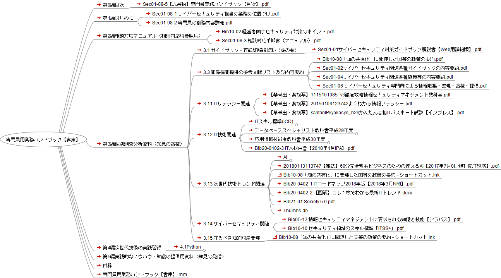

専門員用業務ハンドブック【書庫】

専門員用業務ハンドブック【書庫】
第0編目次
Sec01-08-5【成果物】専門員業務ハンドブック【目次】.pdf
第1編はじめに
Sec01-08-1 サイバーセキュリティ担当の業務の位置づけ.pdf
Sec01-08-2 専門員の職務内容詳細.pdf
第2編相談対応マニュアル（相談対応時参照用）
Bib10-02 経営者向けセキュリティ対策のポイント.pdf
Sec01-08-3 相談対応手順書（マニュアル）.pdf
第3編個別調査分析資料（知見の蓄積）
3.1 ガイドブック内容詳細解説資料（虎の巻）
Sec01-01サイバーセキュリティ対策ガイドブック解説書【Web用詳細版】.pdf
3.3 関係機関提供の参考文献リスト及び内容要約
Bib10-08「知の共有化」に関連した国等の政策の要約.pdf
Sec01-02サイバーセキュリティ関連各種ガイドブックの内容要約.pdf
Sec01-04サイバーセキュリティ関連各種施策等の内容要約.pdf
Sec01-06 サイバーセキュリティ専門員による情報収集・整理・蓄積・提供.pdf
3.11.ITリテラシー関連
【禁帯出・禁複写】1115101085_v3徹底攻略情報セキュリティマネジメント教科書.pdf
【禁帯出・禁複写】20150106123742よくわかる情報リテラシー.pdf
【禁帯出・禁複写】kantanIPkyokasyo_h26かんたん合格ITパスポート試験【インプレス】.pdf
3.12.IT技術関連
ITスキル標準(iCD)
Bib10-09データサイエンス領域のスキル標準「ITSS+」.pdf
データベーススペシャリスト教科書平成29年度
【禁帯出・禁複写】徹底攻略データベーススペシャリスト教科書 平成29年度1116101018.pdf
【禁帯出・禁複写】過去問題解説：平成25年度春データベーススペシャリスト試験Furoku_kakokaisetsu25.pdf
【禁帯出・禁複写】過去問題解説：平成26年度春データベーススペシャリスト試験.pdf
【禁帯出・禁複写】過去問題解説：平成27年度春データベーススペシャリスト試験Furoku_kakokaisetsu27.pdf
応用情報技術者教科書平成30年度
【禁帯出・禁複写】徹底攻略 応用情報技術者教科書 平成30年度1117101078.pdf
過去問題解説：平成25年度春期試験（平成26年度版に収録した過去問題＆解説 2.2MB） APtokuten_KAKO25haru.pdf
過去問題解説：平成26年度春期試験（平成27年度版に収録した過去問題＆解説 2.1MB） APtokuten_KAKO26haru.pdf
過去問題解説：平成26年度秋期試験（著者生解説原稿をPDF化 800KB）APtokuten_KAKO26aki_kaisetuONLY.pdf
過去問題解説：平成27年度春期試験（平成28年度版に収録した過去問題＆解説 2.1MB） APtokuten_KAKO27haru.pdf
過去問題解説：平成27年度秋期試験（著者生解説原稿をPDF化 1.7MB）APtokuten_KAKO27aki_kaisetuONLY.pdf
過去問題解説：平成28年度春期試験（平成29年度版に収録した過去問題＆解説 4.0MB）APtokuten_KAKO28haru.pdf
過去問題解説：平成28年度秋期試験（著者生解説原稿をPDF化 3.4MB）APtokuten_KAKO28aki_kaisetuONLY.pdf
Bib20-0402-3 IT人材白書【2018年4月IPA】.pdf
3.13.次世代技術トレンド関連
AI
Bib20-0401人工知能に関する文献のポイント（引用）.pdf
Bib20-04人工知能に関する基礎知識（まとめ）.pdf
20180113113747【雑誌】60分完全理解ビジネスのための使えるAI【2017年7月8日週刊東洋経済】.pdf
Bib10-08「知の共有化」に関連した国等の政策の要約 - ショートカット.lnk
Bib20-0402-1 ITロードマップ2018年版【2018年3月NRI】.pdf
Bib20-0402-2 【図解】コレ１枚でわかる最新ITトレンド.docx
Bib21-01 Society 5.0.pdf
Thumbs.db
3.14.サイバーセキュリティ関連
Bib05-13 情報セキュリティマネジメントに要求される知識と技能【シラバス】.pdf
Bib10-10 セキュリティ領域のスキル標準「ITSS+」.pdf
3.15.守るべき知的財産関連
Bib10-08「知の共有化」に関連した国等の政策の要約 - ショートカット.lnk
第4編次世代技術の実践習得
4.1Python
Python逆引き
chap01
sec02
hello.py
chap02
02_03
battle.py
battle_for_if.py
battle_random.py
battle_while.py
battle_while_break.py
buy_sweets.py
buy_sweets_elif.py
continue.py
exit.py
if_1.py
infinite_loop.py
02_04
appear.py
default_arg.py
err_sample.py
for_else.py
for_else2.py
for_else3.py
for_else4.py
for_else5.py
for_else_instead.py
global.py
global2.py
global3.py
global_scope.py
keyword_arg.py
local_scope.py
parameter.py
return.py
try_except.py
try_except2.py
02_05
iterate.py
multilist.py
02_06
tuple.py
02_07
dict_droid.py
dict_droid2.py
dict_droid3.py
dict_droid4.py
dict_droid_for.py
02_08
iretare_zip.py
zip_dict.py
zip_inner.py
zip_list.py
02_10
decorater.py
dic_param.py
sequence_param.py
02_11
BattleGame
__pycache__
controller.cpython-36.pyc
responder.cpython-36.pyc
controller.py
main.py
responder.py
class_test.py
chap03
03_01
back_slang.py
inputCheck.py
pointAdder.py
03_02
mail_regex.py
phone_regex.py
phpneAndMail.py
verbose.py
chap04
04_01
pformat
__pycache__
custmer.cpython-36.pyc
customer.cpython-36.pyc
customer.py
mcb.bak
mcb.dat
mcb.dir
pformat.py
usePformatData.py
save_variable
friend.bak
friend.dat
friend.dir
save_variable.py
get_fileSize.py
04_02
saveToZip
saveToZip.py
delete_folder.py
delete_unlik.py
os_walk.py
chap05
05_01
logToFile
breakPoint.py
logFIle.txt
logToFile.py
traceback
error.txt
saveTraceback.py
__pycache__
traceback.cpython-36.pyc
error.txt
handling_error.py
printLog.py
raiseException.py
traceback.py
05_02
doDebug.py
chap06
06_01
cellRange.py
getAllRowsData.py
getCell.py
getColumnLetter.py
getExcelBook.py
getRowColumn.py
getSheet.py
getSheetsName.py
maxRowColumn.py
UseColumAndRow.py
地形別面積.xlsx
06_02
getAllColumnsData.py
getAllRowsData.py
getColumnData.py
getRecords.py
getRowData.py
地形別面積.xlsx
06_03
makeBarChart
barChart.xlsx
makeBarChart.py
registerRecord
registerRecord.py
月別売上.xlsx
updater
salesUpdater.py
sample.xlsx
惣菜売上.xlsx
惣菜売上_freeze.xlsx
惣菜売上_updated.xlsx
chap07
07_01
getText
getText.py
サンプル文書.docx
styled
sample.docx
styled.docx
style.py
改ページ.docx
新規文書.docx
見出し.docx
chap08
08_01
index.htm
08_02
is_weather.py
08_03
wiki_data.py
08_04
yahoo_headline.py
chap09
09_02
convert_encode
alice.txt
alice_utf-8.txt
convert_encode.py
disp_paragraph
disp_paragraph.py
disp_paragraph2.py
kusamakura.txt
find
find.py
find_break.py
sample.txt
frequency table
alice.txt
frequency table.py
frequency table_sort
alice.txt
frequency table_sort.py
paragraph_number
kusamakura.txt
paragraph_number.py
read
read.py
sample.txt
read_rstrip
read_rstrip.py
sample.txt
skip
sample_blank.txt
skip.py
word_list
alice.txt
word_list.py
word_list 2
alice.txt
word_list2.py
09_03
nouns_collection
__pycache__
analyzer.cpython-36.pyc
analyzer.py
dictionary.txt
nouns_collection.py
nouns_collection2.py
nouns_collection3.py
analyzer.py
09_04
markov_text.py
text.txt
09_05
markov_bot
analyzer.py
bocchan.txt
markov_bot.py
markov_bot2
__pycache__
analyzer.cpython-36.pyc
analyzer.py
bocchan.txt
markov_bot2.py
09_06
frequency_table
analyzer.py
bocchan.txt
frequency_table.py
chap10
10_01
button.py
button_pack.py
button_pack_grid.py
button_pack_place.py
button_pack_side.py
check_button.py
gui_base.py
img1.gif
menu.py
radio_button.py
tomorrows_action.py
window_size.py
chap11
10_02
.ipynb_checkpoints
vector_calc-checkpoint.ipynb
vector_calc2-checkpoint.ipynb
vector_inner_prod-checkpoint.ipynb
use_array.ipynb
use_array2.ipynb
use_array3.ipynb
use_array4.ipynb
use_array5.ipynb
use_array6.ipynb
use_array7.ipynb
vector_calc.ipynb
vector_calc2.ipynb
vector_inner_prod.ipynb
10_03
.ipynb_checkpoints
inverse-checkpoint.ipynb
matrix2-checkpoint.ipynb
matrix_add_sub-checkpoint.ipynb
matrix_law-checkpoint.ipynb
matrix_multipl-checkpoint.ipynb
matrix_multiple2-checkpoint.ipynb
mtrix_aggregate-checkpoint.ipynb
transverse-checkpoint.ipynb
inverse.ipynb
matrix.ipynb
matrix2.ipynb
matrix_add_sub.ipynb
matrix_law.ipynb
matrix_multipl.ipynb
matrix_multiple2.ipynb
mtrix_aggregate.ipynb
transverse.ipynb
10_04
.ipynb_checkpoints
add_row-checkpoint.ipynb
data_frame-checkpoint.ipynb
data_frame_add-checkpoint.ipynb
data_frame_add2-checkpoint.ipynb
add_row.ipynb
data_frame.ipynb
data_frame_add.ipynb
data_frame_add2.ipynb
第5編実践的なノウハウ・知識の提供用資料（知見の発信）
付録
専門員用業務ハンドブック【書庫】.mm